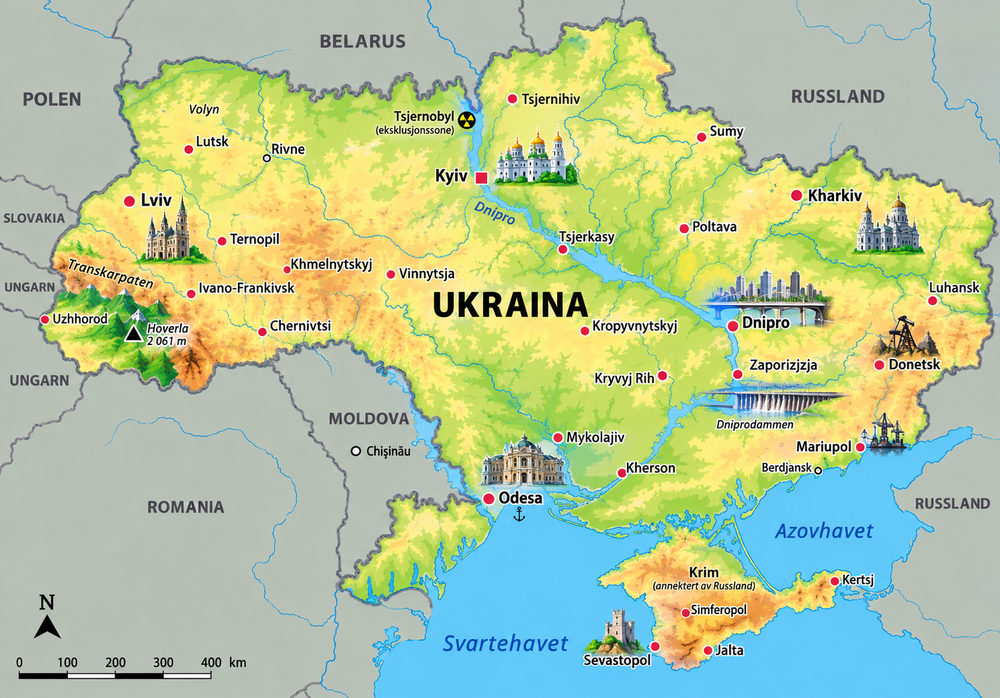
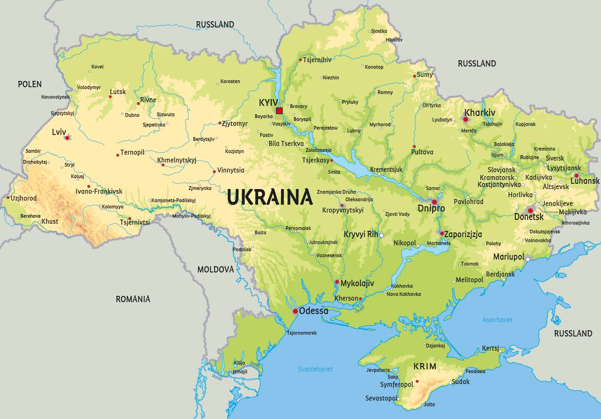

⚡ Korte fakta om Ukraina
🗺️ Kart over Ukraina
Klikk på et av kartene for å åpne og zoome i fullskjerm!


1. Natur og klima
Ukraina er Europas nest største land i areal (etter Russland)! Det er kjent for sine enorme, fruktbare sletter, solsikkeåkrer og vakre Karpatene-fjell.
Hoverla i Karpatene er Ukrainas høyeste fjell, og strekker seg 2 061 meter over havet.
Den mektige elva Dnipro deler landet i to før den renner ut i Svartehavet i sør.
Ukraina har verdens mest fruktbare matjord, kalt tsjernoziom (svartjord), ideelt for hvete og solsikker!
Dyreliv: I skogene og fjellene bor det brunbjørn, ulv, gaupe, hjort og visent (européisk bison)!
2. Folk og samfunn
Ukraina har en rik kultur full av gjestfrihet, musikk, vakre folkedrakter og sterke tradisjoner.
🏢 Største byer i Ukraina
- 🔹 Kyjiv: Hovedstaden med tusen år gamle gullkupler og historiske klostre.
- 🔹 Kharkiv: Stor kultur- og universitetsby i øst.
- 🔹 Odesa: Den kjente havnebyen ved Svartehavet.
- 🔹 Lviv: En vakker, historisk by i vest full av kafeer og arkitektur.
🎨 Vysjyvanka & Borsch
Den broderte ukrainske skjorten heter vysjyvanka. Mønstrene forteller historier om hvor man kommer fra!
Ukrainas mest kjente tradisjonsrett er borsch – en god rødbetesuppe som ofte serveres med rømme og brød med hvitløk (pampusjky).
🗣️ Språk og Alfabet
Det offisielle språket er ukrainsk. De bruker det kyrilliske alfabetet (f.eks. skrives Kyjiv som «Київ»).
3. Stat og politikk
Ukraina er en republikk og et demokrati med en valgt president som statsoverhode.
Laster...
Ukrainas president og statsoverhode.
Denys Sjmyhal
Statsministeren som leder regjeringen.
Verkhovna Rada
Ukrainas parlament med 450 innvalgte representanter.
📍 Ukraina er inndelt i 24 fylker (oblasti), én autonom republikk (Krim) og to byer med spesiell status (Kyjiv og Sevastopol).
4. Ukrainas historie
⚔️ Kyjivriket (800–1200-tallet)
Kyjiv var sentrum i en mektig stat hvor nordiske vikinger (væringer) og slaviske folk samhandlet og bygde et stort rike!
🐎 Kosakkene (1500–1700-tallet)
Kosakkene var fryktløse krigere og ryttere på steppeområdene som kjempet for sin egen frihet og selvstendighet.
 Uavhengighet i 1991
Uavhengighet i 1991
Da Sovjetunionen ble oppløst i 1991, stemte et overveldende flertall av ukrainerne for å bli et helt fritt land.
✈️ Verdens største fly Mrija (1988)
Ukraina bygde Antonov An-225 «Mrija» (som betyr 'drøm') – verdens største og tyngste lastefly i historien!
🛡️ Kampen for frihet (Nåtid)
Ukrainerne er kjent verden over for sit utrolige mot og samhold i kampen for demokrati, land og selvstendighet.
5. Økonomi og næringsliv
Hva produserer de i Ukraina? Landet er blant verdens viktigste matprodusenter og har en raskt voksende teknologibransje!
Korn & Solsikke
Verdens største eksportør av solsikkeolje og masse korn.
IT & Teknologi
Tusenvis av dyktige programmerere og IT-utviklere.
Stål & Metall
Rik på jernmalm og stor stålproduksjon til hele verden.
Luftfart
Antonov-fabrikken har bygd noen av verdens største fly.
6. Kultur og underholdning
🏫 Skole og sport
Barn i Ukraina starter på skolen når de er 6 år. Utdanning og matematikk har alltid stått veldig sterkt i Ukraina.
⚽ Ukrainas populære sporter:
Fotball, boksing, gymnastikk og sjakk!
🌟 Kjente ukrainere
- ✍️ Taras Sjevtsjenko: Ukrainas nasjonaldikter og kunstner.
- 🥊 Klitsjko-brødrene & Usyk: Verdensmestre i tungvektsboksing.
- ⚽ Andrij Sjevtsjenko: Legendarisk fotballspiller og Gullballen-vinner.
- 🎶 Ruslana & Kalush Orchestra: Vinnere av Eurovision Song Contest!
🧠 Test deg selv: Ukraina-Quiz!
Spørsmål laster...